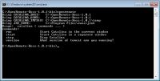

Hello!
I am following the directions for installation (WinXP) listed at http://setup.openremote.org/Install.html and seem to have run into a problem. When I execute the openremote commande from the commmande prompt, I get the output shown in the attached screen shot. Attempting to load localhost:8080 in my browser generates a "problem loading page" error. Although there is no error listed when launching openremote, it appears that everything is not loading as expected. Any ideas?
I am running the latest Java6 update on Win7 Pro and the system seems happy with all other applications using java.
Thanks,
Kent 
{kind=link}
{kind=link}
|
Try "openremote run" |
|
That was it! Although I should have thought to try the run argument... Thanks! |
|
Hi Kent, I don't have a Windows 7 machine handy at the moment, let us know if there's anything in the instructions that doesn't work compared to XP... Appreciated. – Juha |
|
Juha- The directions worked fine with two minor exceptions.
Thanks for making me feel welcome! While I do not write code, I am fairly technical and am enjoying playing with the project. I tinker with linux from time to time, but not enough to become proficient. For now I am sticking with Windows - mostly because of my limited time due to family and school demands. I plan to install some X10 security and home automation equipment around the holidays and will be happy to experiment and share my experiences here. I also hope to play with an IR blaster, but have some questions about it that I will post separately. Let me know if I can help further. I have several laptops running Win7 and two iPhones in the home (and an NSLU2). Cheers! EDIT: I should clarify that my windows preference is just for current convenience. When the system is mature enough to meet my HA needs, I will set up a linux server - perhaps a SheevaPlug or Eee Box. |
|
Thanks for the feedback – I will make the corrections. I need to test if a restart is really necessary – I wrote the instructions down from memory but I think just restarting the cmd console might be sufficient. I'll run the steps on Windows XP to see what happens. All help is very welcome. Testing, installing, reporting inconsistencies or incorrectness, reporting lack of information on any area in either the software or the website, all helps to make it a better experience for everyone. Thanks, – Juha |
|
I need to test if a restart is really necessary - I wrote the instructions down from memory but I think just restarting the cmd console might be sufficient. I'll run the steps on Windows XP to see what happens. Confirmed - a restart is not neccessary, a console restart is enough. Windows 7 machine. |
|
Thanks for confirming that. Saves me some work I'll update the instructions to point this out. |
|
Hi, 10-Jan-2010 10:57:57 org.apache.catalina.core.StandardServer await Any thoughts? Regards, |
|
Yes this is a port conflict between services on your machine. Although 8005 is not the usual one. Let me know if you need more help trying to resolve this. |
|
Hi Admin, Thanks in advance. |
|
You can try netstat first if that reveals anything useful (but usually doesn't tell you which app is allocating the port unless it has been upgraded in Windows 7). There are tools that you can find with Google (e.g. Fport) that can possibly reveal which app or process is taking up the port. |
|
You can also try ProcessExplorer. I think there you can see which ports are used by which programm. http://technet.microsoft.com/de-de/sysinternals/bb896653.aspx But I don't know if this is working with Windows 7. |
|
Thanks for that Juha, |
|
Thanks for the suggestion Marcus, |
|
You can see the ports when you select the process and display properties. |
|
You can see the ports when you select the process and display properties. - Strange: The comment appears twice - |